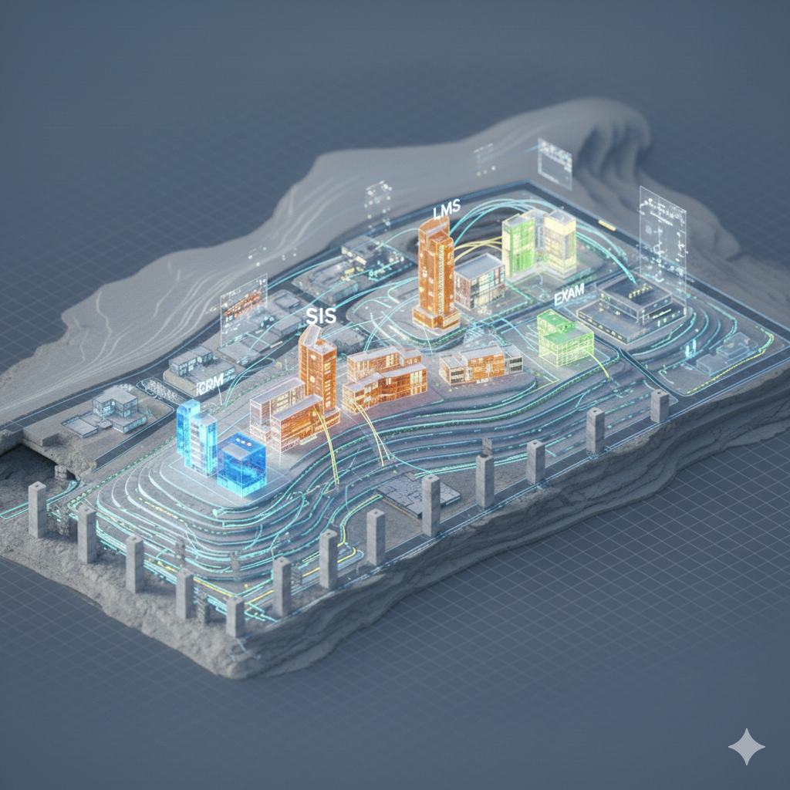

El SIS: doble-click en el núcleo
El Student Information System modela la estrategia académica y los procesos más importantes de la institución.

El mapa de tus sistemas
¿Cómo funciona realmente una institución educativa moderna por dentro?

Que puedas leer, cuestionar y discutir la arquitectura tecnológica de una organización.
15 minutos — Dibujá todos los sistemas tecnológicos que conocés de tu organización.
Todas las herramientas tecnológicas que conocés
Nombralas y conectalas si están integradas
Las críticas y las que no entendés cómo se conectan
Dibuja como sea. No hay reglas.
Son los edificios. Cada uno cumple una función.
Son las calles. Conectan los edificios entre sí.
Son las personas que circulan. Si las calles están cortadas, no llegan.
Es el plano completo de la ciudad.
Si tu organización no es educativa, pensá en los sistemas equivalentes de tu industria: ERP, CRM, plataforma de e-commerce, etc.
El Student Information System modela la estrategia académica y los procesos más importantes de la institución.
Organiza material de aprendizaje (videos, lecturas, actividades) en una secuencia pedagógica con sentido.
Espacio donde interactúan docentes y estudiantes: foros, entregas, comunicaciones, calendario.
Registro centralizado de evaluaciones y notas. Integrado con el SIS, las calificaciones fluyen automáticamente.
Captación de prospectos, campañas digitales, costo de adquisición por estudiante y efectividad de cada canal.
Embudo de conversión desde primer contacto hasta inscripción. Seguimiento personalizado sin perder prospectos.
Consultas, reclamos, trámites. Historial completo para responder con contexto sin que el estudiante repita su situación.
¿Qué pasa cuando cada área trabaja con su propia versión de los datos?
Estudiantes registrados
Contactos activos
Usuarios con acceso
Para el líder ejecutivo:
El cuadrante de Tecnología define el stack para el grupo R'Evolution.

¿Puede soportar el doble de estudiantes? ¿Hay que cambiar sistemas antes de crecer?
¿Quién es dueño de cada dato? ¿Hay visión unificada o cada área compra lo que quiere?
¿Cuánto cuesta mantener sistemas sin integrar? ¿Cuántas horas-persona se pierden en tareas manuales?
¿Qué pasa si cae el sistema central? ¿Hay plan B? ¿Los datos están respaldados?
10 minutos — Completá el Template Mapa de Arquitectura IT
Qué sistemas tiene tu organización y cómo se conectan (o no)
Dueño de los datos del estudiante y top 3 dolores
Descubrimiento principal, dolor #1, pregunta que te llevás
Módulo 03 — Arquitectura IT Educativa